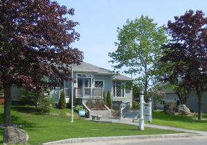
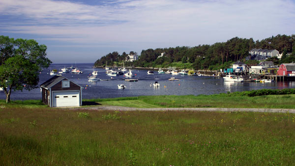

Island and Town
Orrs Island
The Town of Harpswell
 Orrs Island is located in the Town of Harpswell which includes several islands as well as a peninsula. The Town of Harpswell website contains a lot of details about the setting of the Orrs Island Cemetery.
Orrs Island is located in the Town of Harpswell which includes several islands as well as a peninsula. The Town of Harpswell website contains a lot of details about the setting of the Orrs Island Cemetery.
 Like the Orrs Island Cemetery, the Orrs Island Library is an historic island institution.
 The Harpswell Heritage Land Trust is dedicated to preserving open spaces in Harpswell and education in outdoor issues.